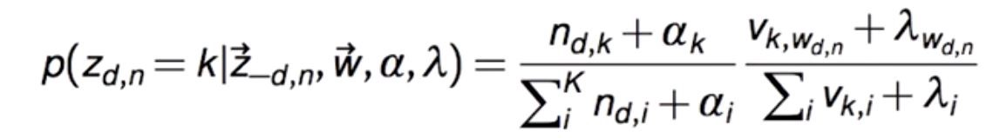
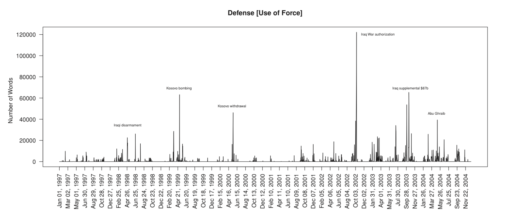
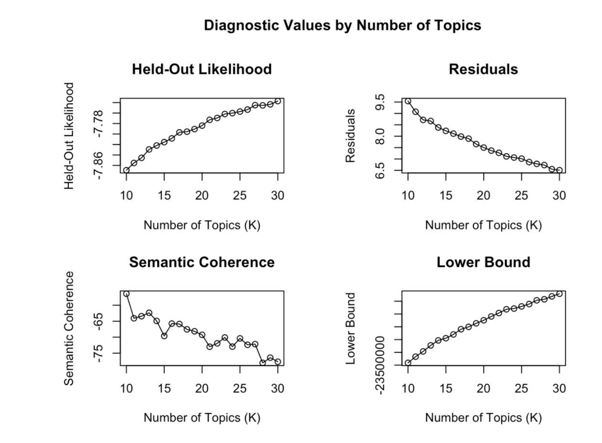
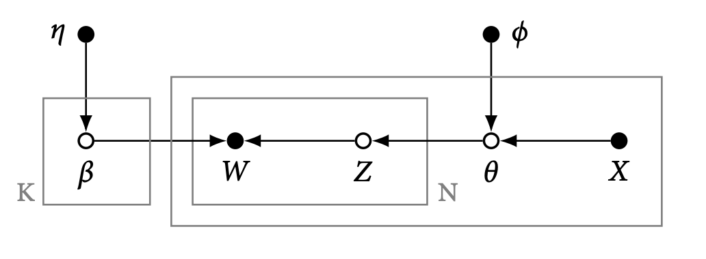
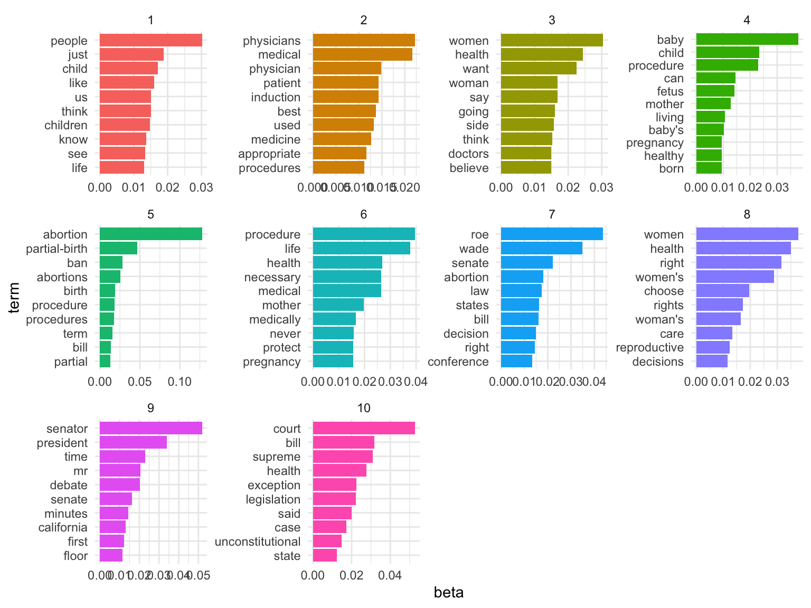
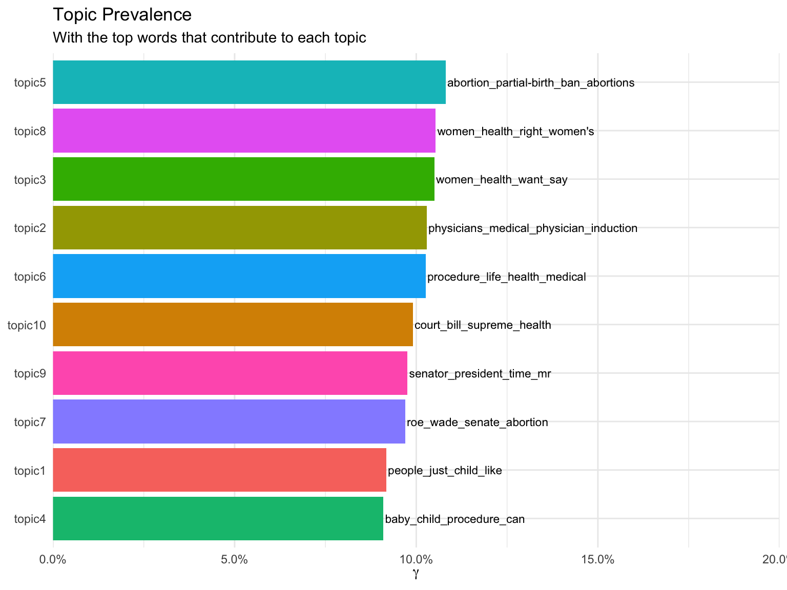

Text as Data: Week 10
Matthias Haber
17 November 2021
Goals for Today
Goals
- Organizational stuff
- Topic models
Topic Models
Topic models: basic idea
We often have collections of documents that we’d like to divide into natural groups so that we can understand them separately. Topic modeling is a method for unsupervised classification of such documents, which finds natural groups of items even when we’re not sure what we’re looking for.
Topic models: basic idea
Topic models are exploratory probability models that
- weaken the contraints required in dictionary based content analysis
- have been intensively studied in the computer science literature
Topic models work best with large amounts of text with a thematic structure
Topic models: LDA
Latent Dirichlet allocation (LDA) is a popular method for fitting a topic model. It treats each document as a mixture of topics, and each topic as a mixture of words.LDA is a method for estimating both of these at the same time: the bag of words associated with each topic, and the bag of topics that describe each document.

Topic models: LDA (II)
We assume that some number of topics exists for the whole collection of documents. Each document is generated by first choosing a distribution over the topics, then, for each word, choosing a topic assignment and choosing the word from the corresponding topic

Topic models: LDA (III)

Topic model: LDA (IV)
Topic models giveth:
- a probabilistic view of the relationship between W, Z and \(\theta\)
- a full statistical framework for learning most aspects of the relationship
and taketh away:
- substantive control: You do not get to assert what the topics mean (inevitable when the Z and \(\theta\) are both unobserved)
Topic model: Gibbs Sampling
- Topic models need to estimate lots of unknowns simultaneously and thus can be quite time consuming to estimate. To estimate the correct weights LDA uses Gibbs sampling, an algorithm for successively sampling conditional distributions of variables.

Application: policy agenda
- Quinn et al. analyze 118,065 congressional speeches from 1997-2004.

Outbut \(\beta\)

Output \(\theta\)

Topic Model evaluation
There are two main modes of evaluation:
- Statistical
- Human
and two natural levels
- The model as a whole: model fit, K, and topic relationships
- Topic structure: word precision, topic coherence
Construct validity
Procedure: 1. Choose number of topics K 2. Fit Model 3. Label Topics 4. Cluster the \(\beta^k\)

Choosing K
The number of topics assumed a priori has a large effect on the results.

Variations: Seeded LDA
Seeded LDA is a semi-supervised automated content analysis model and a variant of the standard LDA approach. While standard LDA does not assume the topics to be found a priori, seeded LDA uses “seed words” to weigh the prior distribution of topics before fitting the model.
R:
install_packages("seededlda")(also comes with great diagnostic functions)
Variations: Structural topic model
Structural topic models (STM) are similar to LDA models but allow to include metadata (the information about each document) into the topicmodel.

- R:
install_packages("stm")(also comes with great diagnostic functions)
Variations: expressed agenda model
In a simpler variation on LDA, Grimmer (2009) defines an expressed agenda model as

Here there are not multiple topics per press release, but there are observed authors drawn from a population
R:
install_github("christophergandrud/ExpAgenda")
Variations: correlated topic models
The Dirichlet multinomial assumptions hide a constraint about topic covariation
- LDA cannot represent free covariation of topic proportions
- The correlated topic model can
Replace the Dirichlet with a Logistic Normal structure (Aitchison, 1986) with arbitrary covariance matrix
R:
topicmodels
Group Excercise
Topic model exercise: Load data
We will take another look at the US Senate debate on partial birth abortion.
## Corpus consisting of 23 documents, showing 5 documents:
##
## Text Types Tokens Sentences party speaker
## ALLARD 400 1165 53 R ALLARD
## BOND 129 232 9 R BOND
## BOXER 2231 18527 886 D BOXER
## BROWNBACK 646 2884 168 R BROWNBACK
## BUNNING 281 593 32 R BUNNINGTopic model exercise: Reshape to paragraphs
The 23 speeches are probably too big to cover only one topic. So we’ll reshape them to paragraphs treating each paragraph as a separate document instead. We can use the corpus_reshape() function for that purpose.
speeches_para <- corpus_reshape(corpus_us_debate_speaker, to = "paragraphs")
head(summary(speeches_para))## Text Types Tokens Sentences party speaker
## 1 ALLARD.1 32 48 3 R ALLARD
## 2 ALLARD.2 41 64 4 R ALLARD
## 3 ALLARD.3 25 29 1 R ALLARD
## 4 ALLARD.4 22 24 1 R ALLARD
## 5 ALLARD.5 68 144 3 R ALLARD
## 6 ALLARD.6 55 89 3 R ALLARDTopic model exercise: Reshape to paragraphs?
The paragraph splitter does not always produce very good results.
##
## 0 2 3 4 5 6 7 8 9 10 11 12 13 14 15 16 17 18 19 20
## 15 53 24 57 54 43 62 129 210 211 214 138 77 35 14 12 11 5 13 6
## 21 22 23 24 25 26 27 28 29 30 31 32 33 34 35 36 37 38 39 40
## 6 3 5 5 4 3 4 9 5 8 8 6 10 4 2 7 6 2 4 6
## 41 42 43 44 45 46 47 48 49 50 51 52 53 54 55 56 57 58 59 60
## 8 8 5 3 5 11 1 3 9 4 4 5 4 6 8 3 9 9 7 6
## 61 62 63 64 65 66 67 68 69 70 71 72 73 74 75 76 77 78 79 80
## 5 9 3 8 6 3 10 7 4 6 13 11 5 3 4 3 9 2 11 8
## 81 82 83 84 85 86 87 88 89 90 91 92 93 94 95 96 97 99 100 101
## 4 2 5 2 3 6 6 3 11 4 1 5 4 3 4 4 5 6 1 1
## 102 103 104 105 106 107 108 109 110 111 112 113 114 115 116 117 118 119 120 121
## 3 3 2 3 3 10 3 2 4 2 3 2 5 1 2 3 3 3 2 1
## 122 123 124 125 126 127 128 129 131 132 133 134 135 137 138 139 140 141 142 143
## 4 1 3 4 1 2 2 5 2 2 1 2 1 4 4 3 1 1 2 3
## 144 145 146 148 151 155 157 158 160 161 165 166 168 169 174 175 182 190 191 197
## 2 1 1 2 1 1 1 2 1 1 1 1 1 1 1 1 1 2 1 1
## 200 206 209 211 235 259 276
## 1 1 1 1 1 1 1Topic model exercise: Create subset and dfm
We’ll only consider those paragraphs that contain at least 8 words, remove punctuation, numbers, stop words, and tokens with less than 2 characters.
Topic model exercise: LDA Topic model
Quanteda does not have any built-in topic models but we can load the required functions from the topicmodels, the seedlda, the stm, or similar packages. The packages each support different types of topic models and come with different functions for further analysis. We will run an LDA model with 10 topic categories using the seededlda package.
Topic model exercise: Investigate topic model output
Let’s look at the most important term for each topic
## topic1 topic2 topic3 topic4 topic5
## [1,] "people" "physicians" "women" "baby" "abortion"
## [2,] "just" "medical" "health" "child" "partial-birth"
## [3,] "child" "physician" "want" "procedure" "ban"
## [4,] "like" "induction" "say" "can" "abortions"
## [5,] "think" "patient" "woman" "fetus" "birth"
## [6,] "us" "best" "going" "mother" "procedure"
## [7,] "children" "used" "side" "living" "procedures"
## [8,] "know" "medicine" "think" "baby's" "term"
## [9,] "see" "appropriate" "believe" "pregnancy" "bill"
## [10,] "life" "procedures" "doctors" "born" "partial"
## topic6 topic7 topic8 topic9 topic10
## [1,] "procedure" "roe" "women" "senator" "court"
## [2,] "life" "wade" "health" "president" "bill"
## [3,] "health" "senate" "right" "time" "supreme"
## [4,] "medical" "abortion" "women's" "mr" "health"
## [5,] "necessary" "law" "choose" "debate" "exception"
## [6,] "mother" "states" "rights" "senate" "legislation"
## [7,] "medically" "bill" "woman's" "minutes" "said"
## [8,] "never" "decision" "care" "california" "case"
## [9,] "protect" "right" "reproductive" "first" "unconstitutional"
## [10,] "pregnancy" "conference" "decisions" "floor" "state"Topic model exercise: Plot most important terms
We can extract the beta coefficients for each word from the model output into a data frame and tidy them up a bit to plot the key words for each topic.
Topic model exercise: Plot most important terms
Then we can plot them using our familiar ggplot syntax.
Topic model exercise: Plot most important terms

Topic model exercise: Assign topics to documents
We can use the topics() function from the seedlda package to obtain the most likely topic for each document and assign them as a new document-level variable.
Topic model exercise: Create topic labels
We can use the most important terms to create a label for each topic that helps us to differentiate between them.
Topic model exercise: Create topic labels
## topic1
## "people_just_child_like"
## topic2
## "physicians_medical_physician_induction"
## topic3
## "women_health_want_say"
## topic4
## "baby_child_procedure_can"
## topic5
## "abortion_partial-birth_ban_abortions"
## topic6
## "procedure_life_health_medical"
## topic7
## "roe_wade_senate_abortion"
## topic8
## "women_health_right_women's"
## topic9
## "senator_president_time_mr"
## topic10
## "court_bill_supreme_health"Topic model exercise: Plot topic distribution
Similar to how we plotted the most important words per topic we can also extract the gamma coefficients of the model to plot the prevalence of topics across all documents.
topic_names_df <- dplyr::bind_rows(topic_names) %>%
gather(topic, names)
topics_df <- as_tibble(para_lda$theta) %>%
mutate(document = rownames(.)) %>%
gather(topic, gamma, -document) %>%
group_by(topic) %>%
summarise(gamma = mean(gamma)) %>%
arrange(desc(gamma)) %>%
left_join(topic_names_df, by = "topic")Topic model exercise: Plot most important terms
Then we can plot them using our familiar ggplot syntax.
topics_df %>%
ggplot(aes(reorder(topic, gamma), gamma, label = names, fill = topic)) +
geom_col(show.legend = FALSE) +
geom_text(hjust = 0, nudge_y = 0.0005, size = 3) +
coord_flip() +
scale_y_continuous(expand = c(0,0),
limits = c(0, 0.2),
labels = scales::percent_format()) +
labs(x = NULL, y = expression(gamma),
title = "Topic Prevalence",
subtitle = "With the top words that contribute to each topic")Topic model exercise: Plot most important terms

Assignment 2
Assignment 2
So far, we have looked only at one variant of the topic model. For the 2nd assignment you will explore the structural topic model from the stm package along with various diagnostic functions. You find the instructions for the assignment on GitHub and Moodle.
Due date: 30 November 2021 Submission form: RMarkdown document
Wrapping up
Questions?
Outlook for our next session
Next week we will look at the very powerful spacyr package.
That’s it for today
Thanks for your attention!